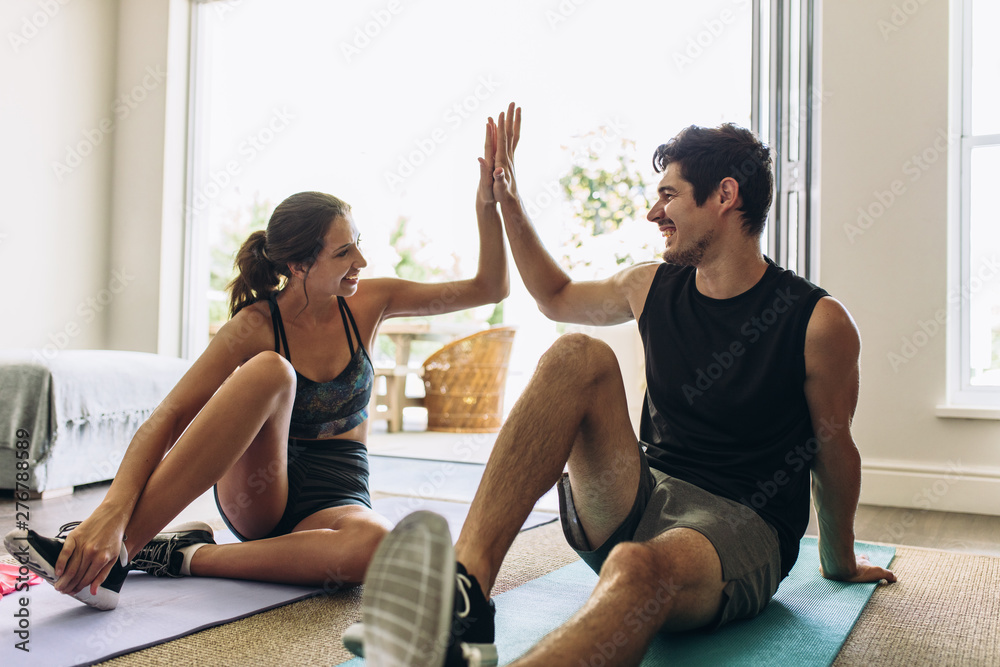
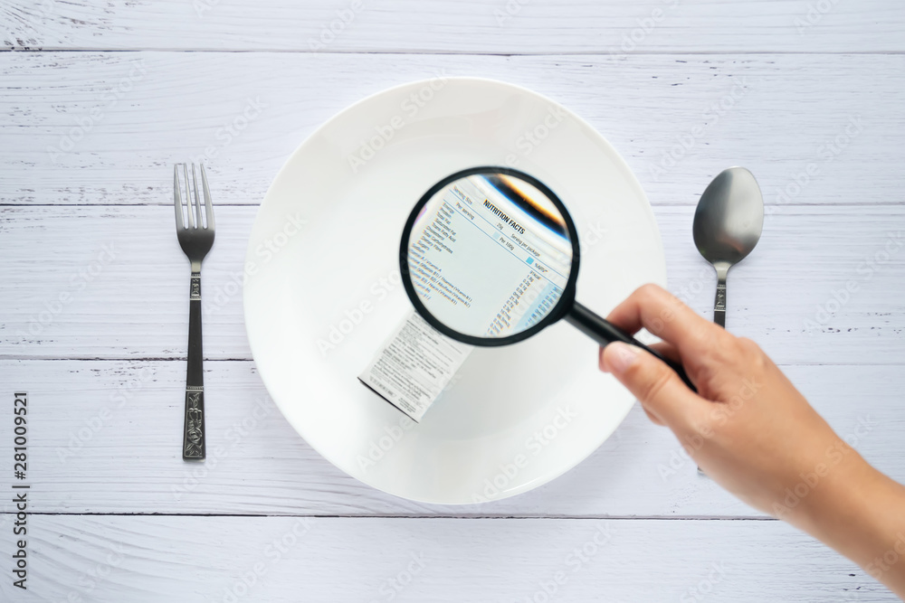
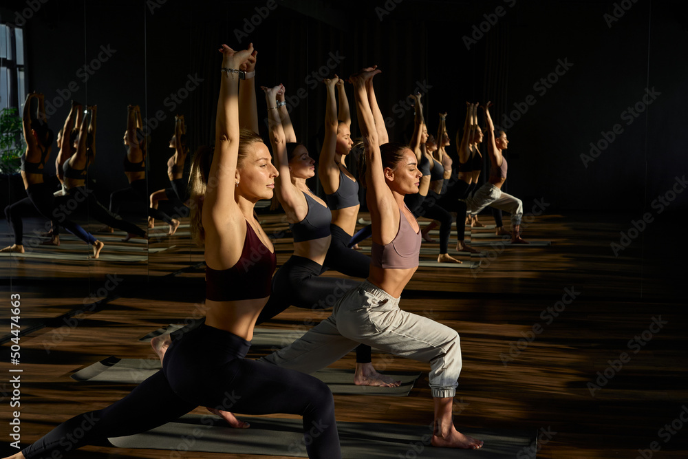

Entrenamiento
La buena alimentación y la actividad física van de la mano, ya que permiten mejorar la condición física siempre que sean llevadas a cabo de manera regular y adoptando cambios en la rutina de forma progresiva hasta incorporar actividades de mayor resistencia. Todo ello se ha de hacer con la finalidad de obtener mayor bienestar y que el organismo se mantenga activo.

Nutrición
Nutrición
La importancia de la nutrición para el buen funcionamiento del organismo radica fundamentalmente en que los hábitos alimenticios sean adecuados. Si bien parece simple corregir malos hábitos, la realidad nos muestra que es mucho más complicado de lo que parece y que las enfermedades relacionadas con la nutrición son hoy en día una preocupación mundial.

Salud
El entrenamiento de la fuerza muscular debe constituir necesariamente una parte importante de los programas de actividad física en el campo de la Salud, especialmente si tenemos en cuenta las serias consecuencias que la ausencia de movimiento derivada del modelo de vida sedentario imperante produce en la reducción de la función muscular
